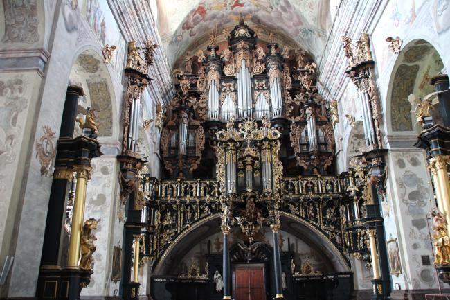

A tymczasem w Cameracie...
.
2012-wakacje
Organy w Leżajsku.
Na tym wspaniałym instrumencie dał koncert nasz kolega z chóru Zenon Kulik.Na moje pytanie o utwór i okazję otrzymałam odpowiedź:
Utwór - Jan Podbielski PREAMBULUM na organy.
Okazja - prezentacja zabytkowych organów dla zwiedzających oraz przyjemność zagrania na nich.
A tak to brzmiało!!!
Super! Prawda???
Jest to tylko malutki fragment koncertu :(
Pracowała też nasza „prezeska”, ale w SEJMIE.
Musimy się pochwalić, iż nasza pani prezes zasiadła w ławach Sejmu RP.
Przyznajcie, że robi to wrażenie :).

© Stowarzyszenie Muzyczne Chór Camerata Wieliczka